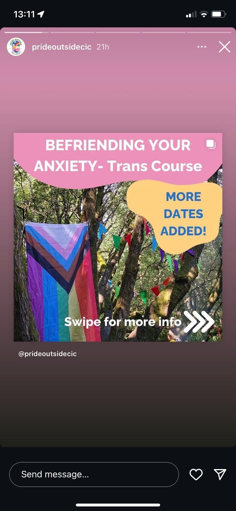
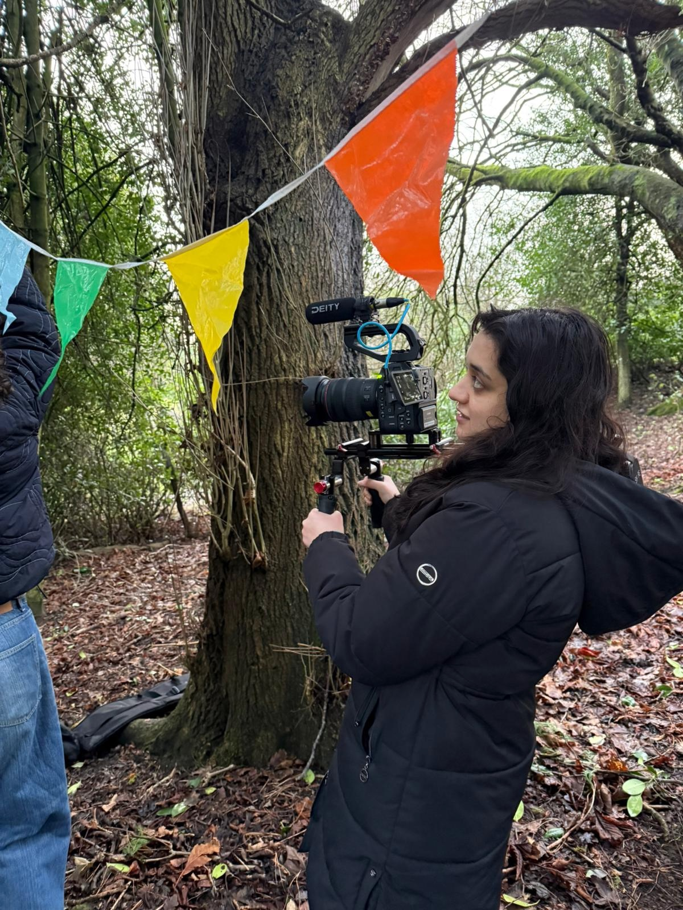
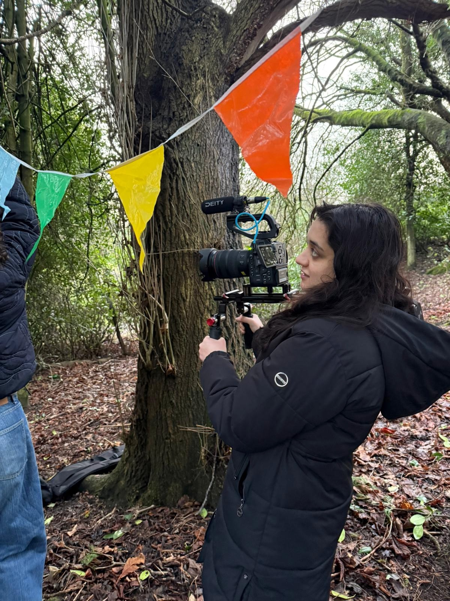

Unfortunately, none of Pride Outside’s outdoor welfare events, which they host for the queer community, fell within our filming window. This was a bit of a disappointment, as attending one of these events would have given us a chance to capture the energy and community that their work fosters in real time.

However, we came across the image above on their Instagram that was taken from one of their welfare events. It showed pride flags and colourful buntings strung between trees in a forest, creating a quiet but powerful celebration of identity and belonging in nature. We decided to recreate this scene as a way of visually representing what Pride Outside stands for as well as showing what to expect from attending an event with them.
 

Using that photo as a reference, we set up our own mini Pride festival in the woods. This shoot ended up producing some of my favourite footage from the project. It beautifully captured the essence of Pride Outside: joy, community, and the reclaiming of outdoor spaces as safe, inclusive environments for queer people. It also served as meaningful B-roll that added depth and symbolism to the narrative we were building.
While being at a real event would have added a more personal and direct connection to the people involved in the social enterprise, we were fortunate to have access to some archival footage that filled in those gaps. Looking back and in the moment, I think attending an actual Pride Outside event would have be an amazing opportunity - not only for the footage but to engage more deeply with the community and the impact of the work being done. We were lucky however to have the archival footage to further demonstrate the welfare side of what Pride Outside offers.